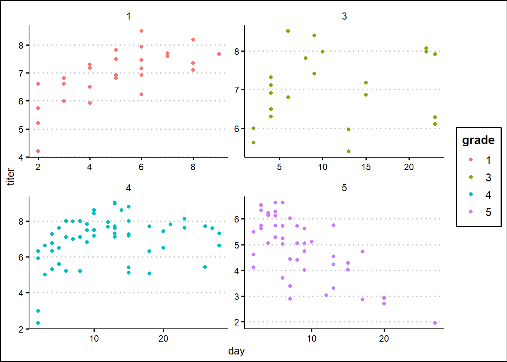
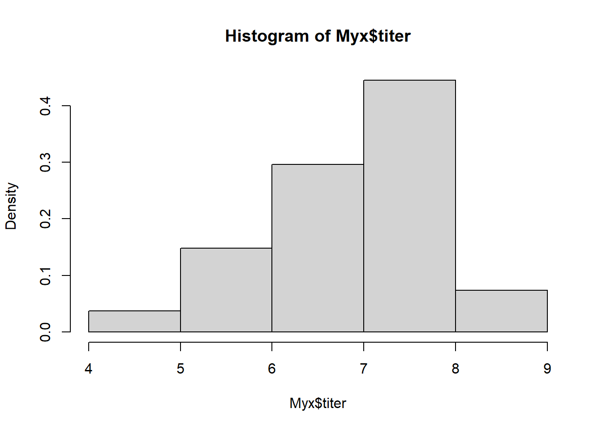
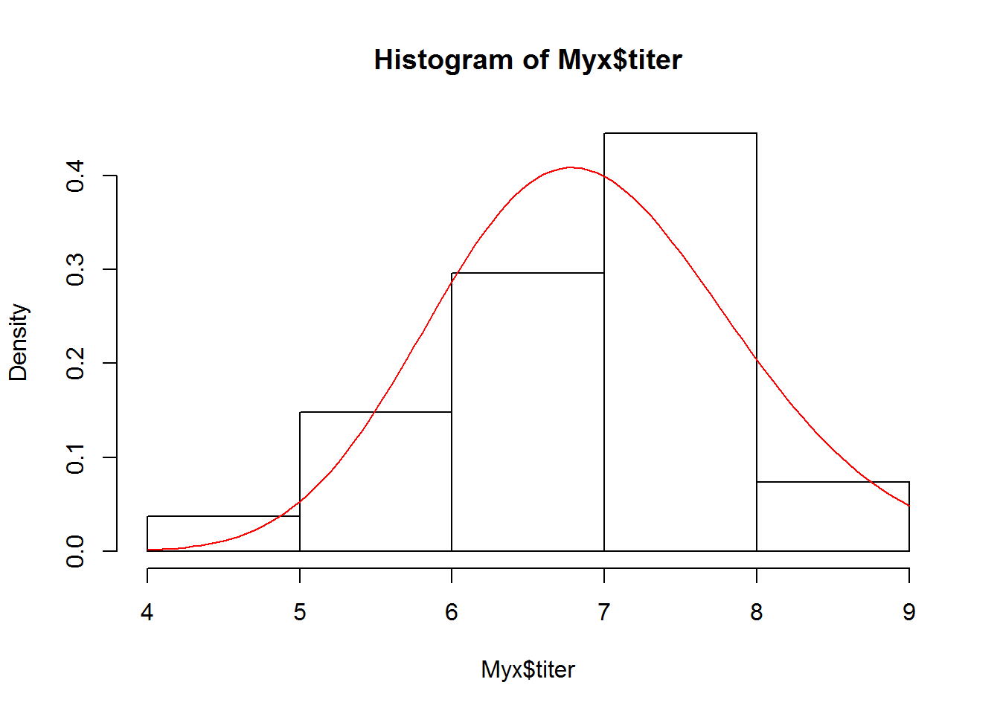
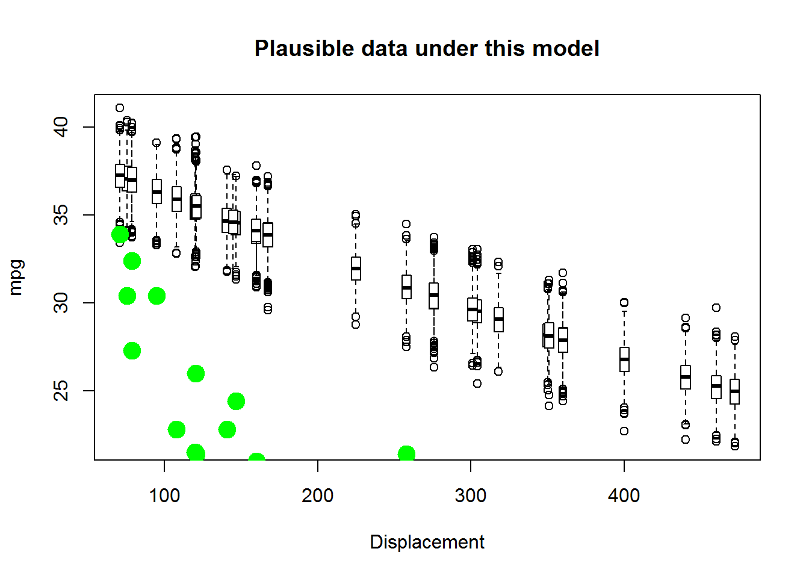
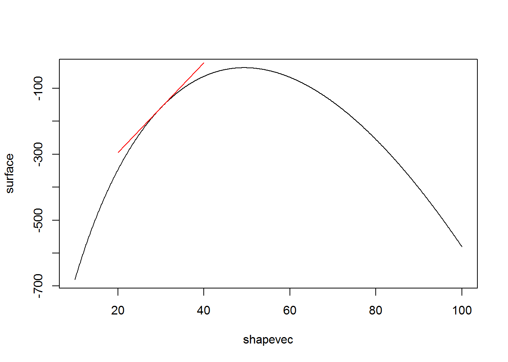
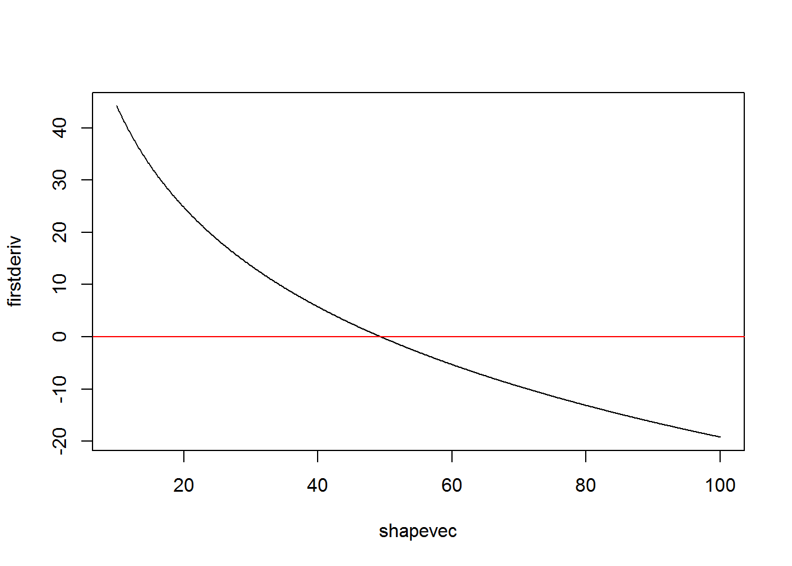

We can’t maximize a likelihood function without an optimization algorithm.
We can’t optimize a management plan, as in the power analysis problem, without an optimization algorithm.
Clearly, we need optimization algorithms!! In addition, they provide an excellent example of how computers (often via brute force algorithms) have overtaken mathematics for doing statistics.
You may not have built your own optimization algorithm before, but you have probably taken advantage of optimization algorithms. For example, if you have performed a glm or a non-linear regression in R, you have exploited numerical optimization algorithms!
We will discuss optimization in the context of maximum likelihood estimation. Let’s start with the most simple of all optimization algorithms:
Just like we did for the two-dimensional likelihood surface, we could evaluate the likelihood at tiny intervals across a broad range of parameter values. Then we can just identify the parameter set that produces the maximum likelihood across all evaluated parameter sets.
Let’s use Bolker’s myxomatosis example dataset to illustrate our optimization issues:
library(emdbook)
MyxDat <- MyxoTiter_sum
Myx <- subset(MyxDat,grade==1)
head(Myx)## grade day titer
## 1 1 2 5.207
## 2 1 2 5.734
## 3 1 2 6.613
## 4 1 3 5.997
## 5 1 3 6.612
## 6 1 3 6.810For this example, we are modeling the distribution of measured titers (virus loads) for Australian rabbits. Bolker chose to use a Gamma distribution. Here is the empirical distribution:
hist(Myx$titer,freq=FALSE)
We need to estimate the gamma rate and shape parameters that best fit this empirical distribution. Here is one example of a Gamma fit to this distribution:
hist(Myx$titer,freq=FALSE)
curve(dgamma(x,shape=40,scale=0.15),add=T,col="red")
Let’s build a likelihood function for this problem!
GammaLikelihoodFunction <- function(params){
sum(dgamma(Myx$titer,shape=params['shape'],scale=params['scale'],log=T))
}
params <- c(40,0.15)
names(params) <- c("shape","scale")
params## shape scale
## 40.00 0.15GammaLikelihoodFunction(params)## [1] -49.58983Now let’s optimize using ‘optim’ like we did before, to find the MLE!
ctrl <- list(fnscale=-1) # maximize rather than minimize!!
MLE <- optim(fn=GammaLikelihoodFunction,par=params,control=ctrl,method="BFGS")## Warning in dgamma(Myx$titer, shape = params["shape"], scale =
## params["scale"], : NaNs produced
## Warning in dgamma(Myx$titer, shape = params["shape"], scale =
## params["scale"], : NaNs produced
## Warning in dgamma(Myx$titer, shape = params["shape"], scale =
## params["scale"], : NaNs produced
## Warning in dgamma(Myx$titer, shape = params["shape"], scale =
## params["scale"], : NaNs produced
## Warning in dgamma(Myx$titer, shape = params["shape"], scale =
## params["scale"], : NaNs produced
## Warning in dgamma(Myx$titer, shape = params["shape"], scale =
## params["scale"], : NaNs produced
## Warning in dgamma(Myx$titer, shape = params["shape"], scale =
## params["scale"], : NaNs produced
## Warning in dgamma(Myx$titer, shape = params["shape"], scale =
## params["scale"], : NaNs produced
## Warning in dgamma(Myx$titer, shape = params["shape"], scale =
## params["scale"], : NaNs produced
## Warning in dgamma(Myx$titer, shape = params["shape"], scale =
## params["scale"], : NaNs produced
## Warning in dgamma(Myx$titer, shape = params["shape"], scale =
## params["scale"], : NaNs produced
## Warning in dgamma(Myx$titer, shape = params["shape"], scale =
## params["scale"], : NaNs produced
## Warning in dgamma(Myx$titer, shape = params["shape"], scale =
## params["scale"], : NaNs produced
## Warning in dgamma(Myx$titer, shape = params["shape"], scale =
## params["scale"], : NaNs produced
## Warning in dgamma(Myx$titer, shape = params["shape"], scale =
## params["scale"], : NaNs produced
## Warning in dgamma(Myx$titer, shape = params["shape"], scale =
## params["scale"], : NaNs produced
## Warning in dgamma(Myx$titer, shape = params["shape"], scale =
## params["scale"], : NaNs produced
## Warning in dgamma(Myx$titer, shape = params["shape"], scale =
## params["scale"], : NaNs produced
## Warning in dgamma(Myx$titer, shape = params["shape"], scale =
## params["scale"], : NaNs produced
## Warning in dgamma(Myx$titer, shape = params["shape"], scale =
## params["scale"], : NaNs produced
## Warning in dgamma(Myx$titer, shape = params["shape"], scale =
## params["scale"], : NaNs produced
## Warning in dgamma(Myx$titer, shape = params["shape"], scale =
## params["scale"], : NaNs produced
## Warning in dgamma(Myx$titer, shape = params["shape"], scale =
## params["scale"], : NaNs produced
## Warning in dgamma(Myx$titer, shape = params["shape"], scale =
## params["scale"], : NaNs produced
## Warning in dgamma(Myx$titer, shape = params["shape"], scale =
## params["scale"], : NaNs produced
## Warning in dgamma(Myx$titer, shape = params["shape"], scale =
## params["scale"], : NaNs produced
## Warning in dgamma(Myx$titer, shape = params["shape"], scale =
## params["scale"], : NaNs producedMLE$par## shape scale
## 49.3666607 0.1402629Let’s visualize the fit of the MLE in this case…
hist(Myx$titer,freq=FALSE)
curve(dgamma(x,shape=MLE$par["shape"],scale=MLE$par["scale"]),add=T,col="red")
Okay, now what if we want to try optimizing with the brute force method…
##############
# define 2-D parameter space!
##############
shapevec <- seq(10,100,by=0.1)
scalevec <- seq(0.01,0.3,by=0.001)
##############
# define the likelihood surface across this grid within parameter space
##############
surface <- matrix(nrow=length(shapevec),ncol=length(scalevec)) # initialize storage variable
newparams <- params
for(i in 1:length(shapevec)){
newparams['shape'] <- shapevec[i]
for(j in 1:length(scalevec)){
newparams['scale'] <- scalevec[j]
surface[i,j] <- GammaLikelihoodFunction(newparams)
}
}
############
# Visualize the likelihood surface
############
image(x=shapevec,y=scalevec,z=surface,zlim=c(-1000,-30),col=topo.colors(12))
contour(x=shapevec,y=scalevec,z=surface,levels=c(-30,-40,-80,-500),add=T)
Now what is the maximum likelihood estimate?
ndx <- which(surface==max(surface),arr.ind=T)
shapevec[ndx[,1]]## [1] 49.8scalevec[ndx[,2]]## [1] 0.139If we assume that the likelihood surface is smooth and has only one minimum, we can develop very efficient optimization algorithms. In general, derivative based methods look for the point in parameter space where the derivative of the likelihood function is zero. That is, the peak!
Let’s imagine we are interested in determining the shape parameter, given a known scale parameter. To use derivative based methods, let’s first build a function that estimates the slope of the function at any arbtrary point in parameter space:
params <- MLE$par
SlopeFunc <- function(shape_guess,tiny=0.001){
params['shape'] <- shape_guess
high <- GammaLikelihoodFunction(params+c(tiny,0))
low <- GammaLikelihoodFunction(params-c(tiny,0))
slope <- (high-low)/(tiny*2)
return(slope)
}
SlopeFunc(shape_guess=30)## [1] 13.62666Now let’s visualize this!
shapevec <- seq(10,100,by=0.1)
##############
# define the likelihood surface
##############
surface <- numeric(length(shapevec)) # initialize storage variable
newparams <- params
for(i in 1:length(shapevec)){
newparams['shape'] <- shapevec[i]
surface[i] <- GammaLikelihoodFunction(newparams)
}
plot(surface~shapevec,type="l")
point <- GammaLikelihoodFunction(c(shape=30,MLE$par['scale']))
slope <- SlopeFunc(shape_guess=30)
lines(c(20,40),c(point-slope*10,point+slope*10),col="red")
We also need a function to compute the second derivative, or the curvature…
params <- MLE$par
CurvatureFunc <- function(shape_guess,tiny=0.001){
params['shape'] <- shape_guess
high <- SlopeFunc(shape_guess+tiny)
low <- SlopeFunc(shape_guess-tiny)
curvature <- (high-low)/(tiny*2)
return(curvature)
}
CurvatureFunc(shape_guess=30)## [1] -0.9151666Okay, now we can implement a derivative-based optimization algorithm!
Essentially, we are trying to find the point where the derivative of the likelihood function is zero (the root of the function!).
The simplest derivative based optimization algorithm is the Newton-Raphson algorithm. Here is the pseudocode:
Let’s first visualize the shape of the first derivative of the likelihood function
firstderiv <- numeric(length(shapevec)) # initialize storage variable
for(i in 1:length(shapevec)){
firstderiv[i] <- SlopeFunc(shapevec[i])
}
plot(firstderiv~shapevec,type="l")
abline(h=0,col="red")
Let’s use the Newton method to find the root. First we pick a starting value. Say we pick 80.
First compute the derivatives:
firstderiv <- SlopeFunc(80)
secondderiv <- CurvatureFunc(80)
firstderiv## [1] -13.13913secondderiv## [1] -0.3396182Now let’s use this linear function to extrapolate to where the first derivative is equal to zero:
oldguess <- 80
newguess <- oldguess - firstderiv/secondderiv
newguess## [1] 41.31206Our new guess is that the shape parameter is 41.31. Let’s do it again!
oldguess <- 41.31
newguess <- oldguess - SlopeFunc(oldguess)/CurvatureFunc(oldguess)
newguess## [1] 48.66339Okay, we’re already getting close to our MLE of around 49.36. Let’s do it again:
oldguess<-newguess
newguess <- oldguess - SlopeFunc(oldguess)/CurvatureFunc(oldguess)
newguess## [1] 49.36237And again!
oldguess<-newguess
newguess <- oldguess - SlopeFunc(oldguess)/CurvatureFunc(oldguess)
newguess## [1] 49.36746And again!!!
oldguess<-newguess
newguess <- oldguess - SlopeFunc(oldguess)/CurvatureFunc(oldguess)
newguess## [1] 49.36746Wow, in just a few steps we already basically found the root. Let’s find the root for real, using an algorithm…
NewtonMethod <- function(firstguess,tolerance=0.0000001){
deriv <- SlopeFunc(firstguess)
oldguess <- firstguess
counter <- 0
while(abs(deriv)>tolerance){
oldguess<-newguess
deriv <- SlopeFunc(oldguess)
newguess <- oldguess - deriv/CurvatureFunc(oldguess)
counter=counter+1
}
mle <- list()
mle$estimate <- newguess
mle$likelihood <- GammaLikelihoodFunction(c(shape=newguess,MLE$par['scale']))
mle$iterations <- counter
return(mle)
}
newMLE <- NewtonMethod(firstguess=80)
newMLE## $estimate
## [1] 49.36746
##
## $likelihood
## [1] -37.6673
##
## $iterations
## [1] 1Hopefully this illustrates the power of optimization algorithms!!